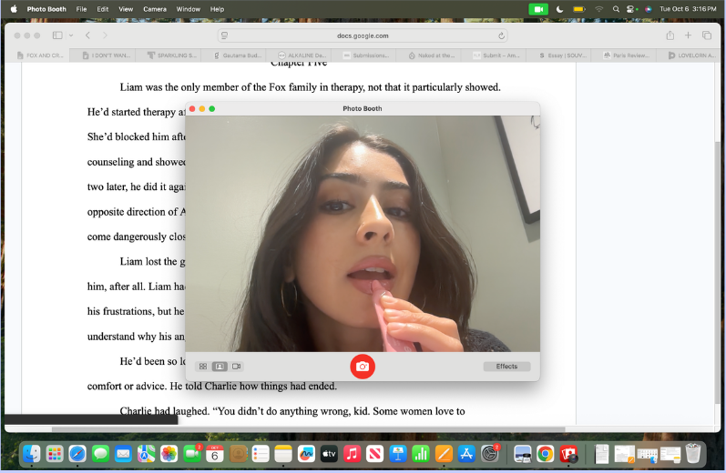

Becca Stevenson

About Me
Becca Stevenson is a writer and flâneuse in New York City. Her work has been in Canyon Voices, scissors & spackle, and the Drunken Boat. Becca is a book publicist at Penguin Random House and is currently working on a novel.
contact: rebeccalillianastevenson@gmail.com